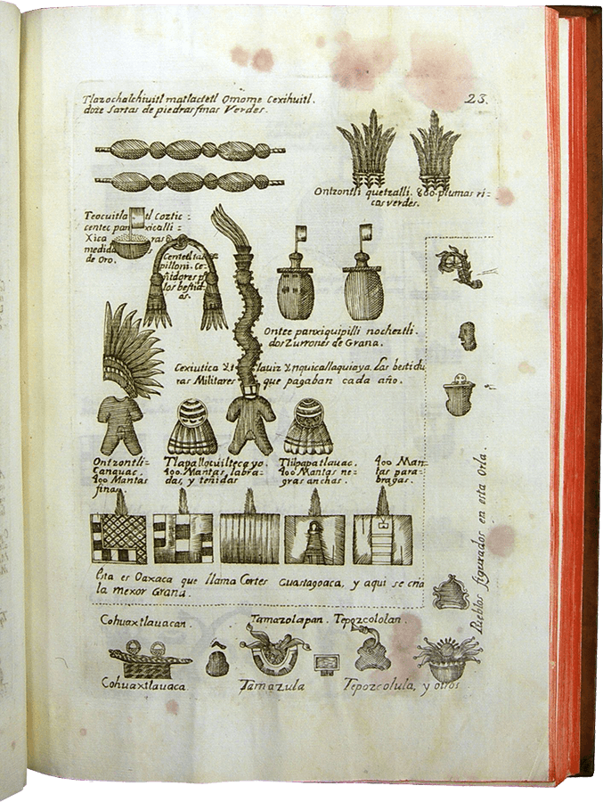

手抄本
历史和出版物
当前《贡品清单》是正面和背面都有绘制的页面集合，每张纸都没有连接在一起，其灵感似乎来自于欧洲书籍，而不是来自中美洲本土的屏风折页。 然而，《贡品清单》的每一页最初并不是独立的、未连接的页面。 虽然今天每个页面都由两张背靠背粘在一起的独立纸张组成，但其中几张页面的正面和背面显示出不同的损坏图案，这一事实表明 《贡品清单》最初由一系列单独的纸张组成，每张纸张都仅在一面进行绘制。 这些单独的纸张在像现在这样粘在一起之前就已经损坏了。 例如，第张正面的图像仅保留一半（folio 1r, recto）。 然而，背面（folio 1v, verso）的所有图像均完好无损。 换句话说，今天看起来像是殖民时期的文件，受到欧洲书籍模式的强烈影响，最初一定有不同的物理排布形式。 事实上，我们现在所见到的《贡品清单》可能是由一系列前西班牙时期的彩绘纸张组合而成的。

第一张正面（左）与第一张反面（右）的破损差异
可能在原始《贡品清单》的纸张粘在一起后，至少其中三张（两张带有正面和反面图像，一张仅在正面绘制）遗失了。 今天留下的不仅是重新排布的，而且也是不完整的。 这些页面以前存在的证据可以在《门多萨手抄本》中找到，该手抄本是 1541 年左右由纳瓦抄写员使用欧洲纸张创作的关于前西班牙时期墨西哥中部生活的巨著。 这本书记录了很多事情：阿兹特克人的征服，从被征服的省份送到岛屿首都墨西哥-特诺奇蒂特兰的贡品，以及原住民从出生到死亡的生命周期。 《门多萨手抄本》中涉及贡品的第二部分，似乎是从《贡品清单》抄袭过来的。 例如，《贡品清单》中从前到后粘合的页面在门多萨手抄本中总是相邻出现，并且门多萨中显示的两对相邻的上贡省份在《贡品清单》中第4、第5张页面之间缺失（阿索科潘 (Axocopan) 和 阿托托尼尔科(Atotonilco)，它们本来应该存在），以及特拉彻奎阿科 (Tlachquiavco) 和 托彻特佩克 (Tochtepec)，应出现在第12和第13张页面之间）。 这表明至少有两张曾经包含在《贡品清单》中的正反页面被用来绘制门多萨手抄本，但后来遗失了。 《门多萨手抄本》中显示的最后一个上贡奥西蒂潘 (Oxitipan) 在《贡品清单》中也缺失了，这表明仅在一侧绘制的第3张页面也已遗失了。
这些缺失的页面并不是《贡品清单》和《门多萨手抄本》的贡品清单之间的唯一区别。 当《门多萨手抄本》的创作者——可能是一位名叫弗朗西斯科·瓜尔普约古尔卡 (Francisco Gualpuyogualcal) 的“大师画家”——复制《贡品清单》中的图像时，他做出了重要的改变。《贡品清单》与 《门多萨手抄本》中的某些项目总和有所不同。 例如，《门多萨手抄本》显示作为贡品的豆类和玉米的数量要更多。 两份文档之间最显着的区别是它们的阅读顺序。 《贡品清单》被设计为从左下角开始并向上阅读，而门多萨的贡品页面则被设计为从左上角开始并向下阅读。 下图显示了这两份文件中如何描述位于今瓦哈卡州的库埃斯特拉瓦坎 (Couaixtlahuacan) 省提供的贡品。 《贡品清单》版本位于左侧（第12张纸正面），《门多萨手抄本》版本位于右侧（第43张纸正面）。 换句话说，《门多萨手抄本》的图像是根据西方字母书籍中的阅读模式排列的。《贡品清单》采用的原住民阅读顺序进一步表明，其最初单面的页面是在欧洲人到来之前创建的。
库埃西特拉瓦坎省在《贡品清单》（左）和《门多萨手抄本》（右）中的页面。
很难猜测《贡品清单》的绘制时间，但《贡品清单》中的原住民阅读顺序表明，它最初的单独页面是在欧洲人到来之前由不同的抄写员创作的，也许用了几年时间。 然而，有三个线索表明这幅画是在 1521 年之前几年绘制的。首先，《门多萨手抄本》中显示的贡省之一是特拉奇基亚科 (Tlachquiaco)（位于瓦哈卡州，《贡品清单》中遗失了该省的页面），该省直到 1511-1512 年才被阿兹特克人统治和征服。其次，来自特佩亚卡克 (Tepeyacac) 省的贡品清单（《贡品清单》第11页反面）列出了来自三个地区的人类俘虏作为上贡品：特拉斯卡拉 (Tlaxcala)、乔卢拉 (Cholula) 和韦霍钦科 (Huexotzingo)。 1512年至1516年间，韦霍钦科曾与阿兹特克人短暂结盟，因此，在这段时间，韦霍钦科是否要提供俘虏作为贡品非常值得怀疑（虽然在1516年之后是可能发生的，当时韦霍钦科从盟友变成了附属国。 第三，特拉帕省 (Tlapa)（格雷罗州）的需求商品清单包括四捆布匹。 根据格雷罗本地原住民绘制的阿兹特克贡品要求记录，直到 1511 年才向特拉帕索要布匹，1519 年阿兹特克人将布匹贡品从三捆增加到四捆。
《门多萨抄本》绘制完成后不久就被运往大西洋彼岸，最终抵达英国。 它被约翰·塞尔登 (John Selden) 收购，并于 1659 年（塞尔登去世 5 年后）被存放在牛津的博德利图书馆（与《Ñudzavui Selden Codex》（Mesolore 项目中包含的另一份殖民文献）一起存放在牛津大学博德利图书馆）。 然而，《贡品清单》仍然留在墨西哥。 人们对《贡品清单》一无所知，直到洛伦索·波杜里尼·贝尔纳杜奇 (Lorenzo Boturini Benaduci)在 18 世纪中叶获得它（当时它被列在他收集的 1740 年代原住民文献清单中）。 波杜里尼于 1736 年抵达新西班牙，并花了八年时间研究和收集前西班牙和殖民时期的物品和手稿，作为他对瓜达卢佩圣母 (Virgin of Guadalupe) 显现的兴趣的一部分。 1743 年，波杜里尼被捕（包括因未经官方许可进入新西班牙）、监禁并被送回西班牙。 波杜里尼的藏品被没收，并在接下来的几十年里慢慢分散——一些文件最终到达了柏林，另一些到达了巴黎，还有一些留在了墨西哥城。
《贡品清单》其中的两张粘合纸张被带到费城，由乔尔·罗伯茨·波因塞特 (Joel Roberts Poinsett) 于 1830 年捐赠给美国哲学会。波因塞特曾是 1830 年代美国政府驻墨西哥的官方代表。 除了对墨西哥文物有兴趣外，他还是一位业余植物学家，最被人铭记的是向美国介绍了一种墨西哥植物，这种植物现在以他的英文名字命名：一品红（纳瓦特语 cuetlaxochitl，拉丁语为 Euphorbia plucherrima，西班牙语为 noche buena）。他带到美国的两张粘合纸张（有时称为“波因塞特手抄本”或“蒙特苏马贡品清单”）于 1942 年 4 月墨西哥城本杰明·富兰克林 (Benjamin Franklin) 图书馆落成典礼时被归还墨西哥。这次归还背后的故事很有趣，部分原因是它是主动自愿的（对于从世界各地购买、出售和被盗的文物的归还来说，这是一种不常见行为）。 事情的经过就是这样。
1937 年 10 月 6 日，丹尼尔·鲁宾·德拉·博尔博拉 (Daniel Rubín de la Borbolla)（墨西哥国立自治大学的）写信给美国哲学会。 他指出，“蒙特苏马贡品清单”是仍在墨西哥的一份较长手稿的一部分，他要求在费城拍摄这两张纸张页的照片。 根据 1937 年 10 月 20 日美国哲学会会议记录，委员会“一致同意”将页面本身送回墨西哥（而不仅仅是照片）。 这花了一些时间。 原来的计划落空了：罗斯福总统要在 1940 年 5 月于华盛顿特区举行的第八届美国科学大会上亲自归还这些页面。结果，真正的归还工作被推迟到 1942 年，在墨西哥城进行 。4 月 14 日，H. M.林登伯格 (H. M. Lyndenberg)（墨西哥城新的本杰明·富兰克林图书馆馆长兼董事）在向阿方索·卡索 (Alfonso Caso)（杰出的墨西哥考古学学家、时任国家人类学和历史研究所所长）赠送这些文件之前发表了简短的讲话。考虑到 20 世纪 30 年代进步的政治环境和罗斯福对拉丁美洲的“睦邻政策”，这种主动归还的行为在很多方面并不令人意外。
最早出版的《贡品清单》复制品可以追溯到十八世纪。 所有幸存页面的黑白版画均由弗朗西斯科·安东尼奥·洛伦扎纳·布伊特龙 (Francisco Antonio Lorenzana y Buitrón) 在其 1770 年出版的《新西班牙史》(Historia de Nueva España) 中出版。 该文件的彩色印刷版发表在安东尼奧·潘尼菲 (Antonio Peñafiel) 1890 年出版的《古代墨西哥艺术的纪念碑》(Monumentos del Arte Mexicano Antiguo) 中，以及 (被称为“波因塞特手抄本”) 出版在丹尼尔·G·布林顿 (Daniel G. Brinton)、亨利·菲利普斯 (Henry Phillips Jr.) 和J·切斯顿·莫里斯 (J. Cheston Morris) 1892 年出版的《蒙特苏马贡品清单》中 （作为美国哲学会会刊的一部分）。 最近的彩色版本出版于 1968 年（墨西哥政府秘书处出版）、1980 年（奥地利格拉茨 Akademische Druck-und Verlagsanstalt 出版）、1991 年（墨西哥财政和公共信贷秘书处出版）、1997 年（ 由墨西哥墨西哥文化基金会出版）、2003 年（《墨西哥考古》杂志的特刊）和 2007 年（由 CONACULTA 和墨西哥国家人类学与历史研究所制作的 CD 光盘版）。 新拍摄的数字副本也可以作为墨西哥数字图书馆的一部分在线查阅。

弗朗西斯科·安东尼奥·洛伦扎纳出版的《新西班牙史》中库埃西特拉瓦坎省页面的版画。
页面目录

帝国边境驻军
01页
第1张正面

帝国边境驻军
02页
第1张反面

特拉特洛尔科
的贡品
03页
第2张正面

佩特拉卡勒科省
的贡品
04页
第2张反面

阿科瓦坎省
的贡品
05页
第3张正面

库阿纳瓦科省
的贡品
06页
第3张反面

瓦特佩克省
的贡品
07页
第4张正面
夸奥蒂特兰省
的贡品
08页
第4张反面

维普奇特兰省
的贡品
09页
第5张正面

阿托托尼尔科省
的贡品
10页
第5张反面

希洛特佩克省
的贡品
11页
第6张正面

夸瓦坎省
的贡品
12页
第6张反面
托路坎省
的贡品
13页
第7张正面

奥奎兰省
的贡品
14页
第7张反面

马琳纳科省
的贡品
索科蒂特兰省
的贡品
15页
第8张正面

特拉彻科省
的贡品
16页
第8张反面

特佩夸奎尔科省
的贡品
17页
第9张正面

锡瓦特兰省
的贡品
18页
第9张反面

特拉潘省
的贡品
19页
第10张正面


特拉科扎乌蒂特兰省
的贡品
奎阿乌特奥潘省
的贡品
尤阿特佩克省
的贡品
20页
第10张反面

查尔科省
的贡品
21页
第11张正面

特佩亚卡克省
的贡品
22页
第11张反面

库埃斯特拉瓦坎省
的贡品
23页
第12张正面

科尤拉潘省
的贡品
24页
第12张反面

索科诺彻科省
的贡品
25页
第13张正面

夸乌托彻科省
的贡品
26页
第13张反面

奎特拉斯特兰省
的贡品
27页
第14张正面

特拉帕科颜省
的贡品
28页
第14张反面

特拉特拉乌奎特佩克省
的贡品
29页
第15张正面

托彻潘省
的贡品
30页
第15张反面

阿特兰省
的贡品
31页
第16张正面
兹克阿克省
的贡品